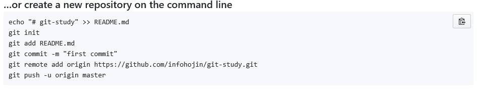

저장소 연결
대표적인 깃호스팅 사이트에 대해 알아보았습니다.
또한, 저장소의 생성 방법에 대해서도 실습했습니다. 이번에서는 생성된 원격 저장소를 연결하는 방법에 대해서 알아보겠습니다.
저장소 주소
로컬 저장소에 깃호스팅으로 생성한 원격 저장소를 연결하기 위해서는 저장소 주소를 알아야 합니다.
깃허브를 기준으로 설명합니다. 호스팅 사이트의 저장소로 이동하면 주소를 확인할 수 있습니다. 생성한 깃허브 저장소(repository)로 접속하면 간단한 인터페이스와 간단하게 설정 방법에 안내 페이지가 출력됩니다.
깃허브는 원격 저장소를 연결할 수 있는 두 프로토콜인 HTTP와 SSH를 지원합니다. 친절하게 페이지를 제일 처음에 프로토콜을 선택하고, URL를 확인할 수 있습니다. 보통 깃허브 URL은 ‘https://github.com/아이디/저장소이름’ 형태로 생성됩니다.

깃에서 보통 원격 저장소는 remote라는 표현을 자주 사용합니다.
자신의 컴퓨터의 로컬 저장소는 한 개 이상 다수의 원격 저장소를 연결할 수 있습니다. 즉, 깃허브의 저장소도 연결할 수 있고 추가로 비트버킷의 저장소도 추가할 수 있습니다.
다만 각 저장소로 코드를 푸시하기 위해서는 별도로 명령을 나누어 실행해주어야 합니다.
원격 저장소 등록
깃허브 저장소 등록 실습을 위해 새로운 폴더를 하나 생성해봅니다.
$ mkdir github
$ cd github/
생성한 깃허브 저장소를 연결해보겠습니다.
원격 저장소를 로컬 저장소와 연결을 하기 위해서는 먼저 등록해주어야 합니다.

깃허브 안내 페이지에는 친절하게도 어떻게 원격 저장소를 연결하는지 방법과 예제 코드를 출력하고 있습니다. 따라해봅시다.
① echo 셸 명령어를 사용해 문자열이 들어간 파일을 하나 생성합니다.
$ echo "# git-study" >> README.md
② 저장소를 초기화합니다.
infoh@LAPTOP-M0820HEF MINGW64 /c/dev/github
$ git init
Initialized empty Git repository in C:/dev/github/.git/
③ 스테이지 영역에 파일을 등록하여 추적 상태로 변경합니다.
infoh@LAPTOP-M0820HEF MINGW64 /c/dev/github (master)
$ git add README.md
warning: LF will be replaced by CRLF in README.md.
The file will have its original line endings in your working directory.
④ 첫 번째 커밋을 합니다.
infoh@LAPTOP-M0820HEF MINGW64 /c/dev/github (master)
$ git commit -m "first Commnit"
[master (root-commit) 0a1290c] first Commnit
1 file changed, 1 insertion(+)
create mode 100644 README.md
⑤ 원격 저장소를 등록합니다.
infoh@LAPTOP-M0820HEF MINGW64 /c/dev/github (master)
$ git remote add origin https://github.com/infohojin/git-study.git
앞에서 본 원격 저장소의 주소는 상당히 긴 이름입니다. 이를 깃에서 편리하게 작업할 수 있도록 별칭을 사용하여 짧은 이름으로 줄여서 사용할 수 있습니다. 주로 origin이라는 별칭을 많이 사용합니다.
⑥ 원격 저장소로 푸시합니다.
infoh@LAPTOP-M0820HEF MINGW64 /c/dev/github (master)
$ git push -u origin master
Counting objects: 3, done.
Writing objects: 100% (3/3), 221 bytes | 0 bytes/s, done.
Total 3 (delta 0), reused 0 (delta 0)
To https://github.com/infohojin/git-study.git
* [new branch] master -> master
Branch master set up to track remote branch master from origin.
원격 저장소를 연결하였다고 해서 내용이 동기화되어 있지는 않습니다. 현재 가지고 있는 첫 번째 커밋 버전을 원격 저장소로 전송하기 위해서는 push 명령어를 수행해야 합니다.
⑦ 갱신된 깃허브 원격 저장소를 확인합니다.

정상적으로 커밋이 푸시되었다면, 깃허브의 저장소 페이지를 갱신해봅니다 원격 저장소에 소스 파일들이 푸시되면 화면이 변경됩니다.
깃허브에 저장소가 푸시되면 커밋된 로그들을 확인할 수 있습니다.
원격 저장소 구성
깃허브는 깃과 관련된 다양한 시각화 정보를 제공합니다. 저장소의 제목 밑을 보면 다음과 같은 상태바가 하나 나타납니다.

한 개의 커밋과 한 개의 브랜치가 있다는 표시입니다. 또한, 소스를 함께 작업하고 기여자를 표시합니다.
이제 로컬 저장소와 원격 저장소의 데이터는 동일한 소스가 저장되어 있습니다. 깃허브 저장소와 좀 더 상세한 기능은 다음 장에서 추가로 설명할 것입니다.